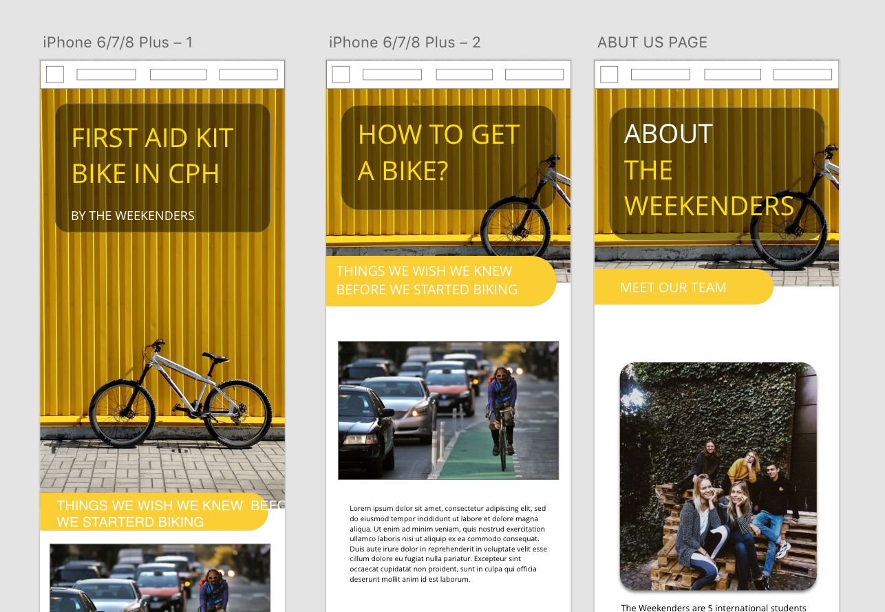
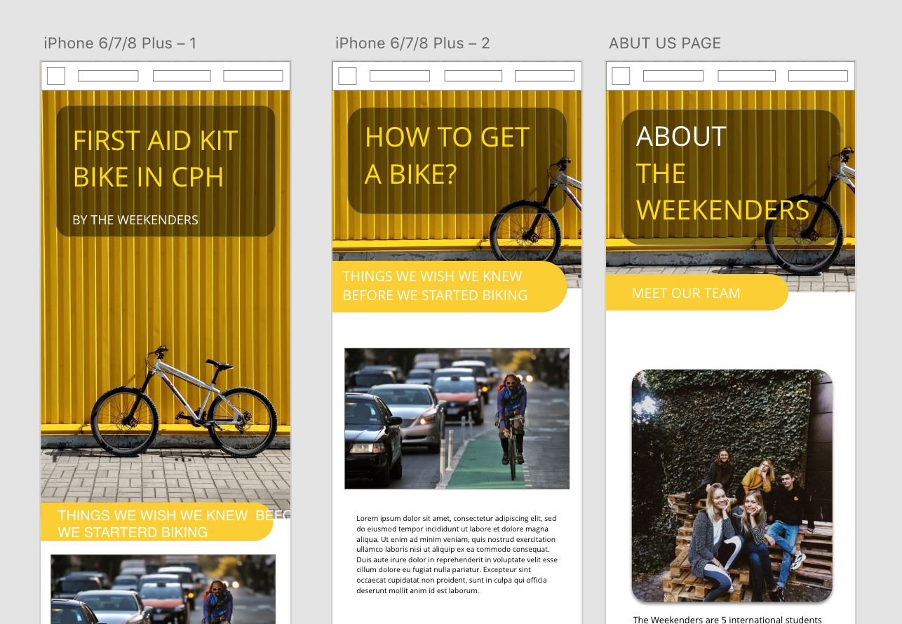

KEA
MMD student
MMD student
My first experience with the XD program. During this project, I realized that this was not the most complicated program. It was a group project. And we made prototype about bikes in Copenhagen. If you want to see the final result of our first XD prototype, click here:
 
